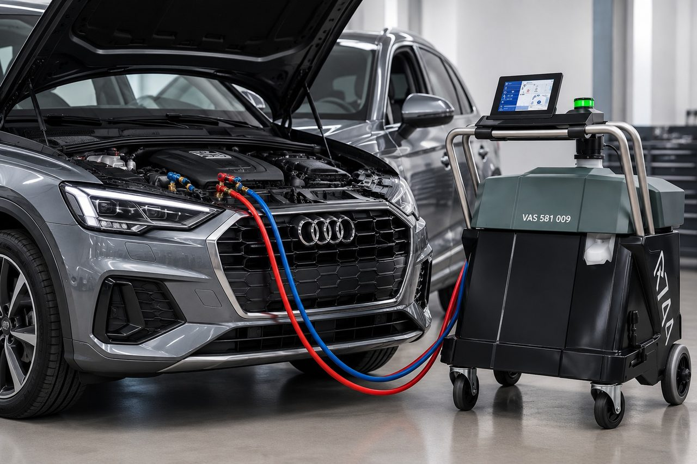

Air conditioning – diagnostics, recharging and cleaning

Professional vehicle air conditioning service
J&S servis has specialised in Volkswagen, Audi, Škoda, SEAT and CUPRA cars since 1994. We diagnose, service, recharge, clean and repair air-conditioning systems using R134a, R1234yf and R744 (CO₂) refrigerants.
We use the ODIS system for the prescribed diagnostic and service functions.
We check, maintain and fill air conditioning systems using specialised service equipment. Part of the professional service is checking the air conditioning function, recovering and charging the refrigerant according to the vehicle manufacturer’s specification, and checking the tightness according to the prescribed procedure.
R134a – air conditioning service for older vehicles
R134a is the refrigerant used in many older vehicles. For systems designed for it by the manufacturer, we provide function checks, service and repairs. We determine the refrigerant charge and the required compressor oil according to the specifications of the specific vehicle.
If there is insufficient cooling or a leak is suspected, we recommend appropriate diagnostics. Topping up the refrigerant alone does not remove a possible leak or other defect in the system.
R1234yf – air conditioning service for newer vehicles
R1234yf is used in many newer cars and has significantly lower global warming potential than R134a. It requires service equipment designed for this refrigerant and adherence to appropriate work procedures.
At J&S SERVIS, we carry out inspection, service and repairs according to the vehicle manufacturer's requirements. We always verify the type of refrigerant for a specific car; the year of production alone is not a sufficient basis for its determination.
R744 (CO₂) – specialised servicing of air-conditioning systems and heat pumps
R744 is the designation for carbon dioxide used as a refrigerant. It can be found in selected air conditioning systems and heat pumps of vehicles, including some electric cars.
These systems operate at significantly higher pressures than air conditioners with R134a or R1234yf and therefore require special service equipment and appropriate procedures. At J&S SERVIS, we use equipment for R744 and the original ODIS system for relevant diagnostic and service functions. We choose the scope of work according to the specific system and manufacturer's documentation.
We service high-pressure air conditioning systems and heat pumps for selected electric vehicles of the Volkswagen Group.
According to the design of the specific vehicle and the manufacturer’s procedure, we carry out valve actuation via diagnostics, safe depressurisation of the circuit, evacuation, charging with the prescribed amount of refrigerant, and system function checks.
Service price list. This includes labour, refrigerant and the necessary diagnostic procedures. The final price depends on the vehicle and the work actually required. Any additional work and its price are agreed with the customer in advance.

We only use the type of refrigerant prescribed by the manufacturer of the specific vehicle. R134a, R1234yf and R744 are not interchangeable refrigerants for normal system refilling.
Basic servicing of R134a and R1234yf air-conditioning systems
- Recovering the refrigerant and checking its quantity.
- Evacuating the air conditioning circuit.
- Charging with the specified quantity of refrigerant.
- Air conditioning function check after servicing.
Service price list. Refilled refrigerant is billed separately according to the actual quantity and current price. Advanced diagnostics and repairs are not included in the basic price.
Air conditioning pipe repairs
We carry out air conditioning pipe repairs using technology VULKAN LOKRING.
We do not use this technology for R744 (CO₂) systems.


Cleaning, disinfection, diagnostics and repairs
- Air conditioning cleaning with a foam preparation, disinfection and ozone treatment of the interior.
- Refrigerant leak detection and pressure testing according to the manufacturer's regulations.
- Diagnostics of air conditioning systems and thermal management of hybrid and electric vehicles.
Cleaning, disinfection, extended diagnostics and repairs are billed separately according to the scope of work performed.
We perform all service operations in accordance with the service procedures of the manufacturer of the specific vehicle.
Before booking
The basic service price is not the price of repairing a leak or other damage. Confirm the price and quantity of refrigerant to be added before work starts. For hybrids and electric vehicles, the specific scope must be confirmed in advance; the air-conditioning offer does not extend the stated scope to high-voltage battery repairs or work on high-voltage components.